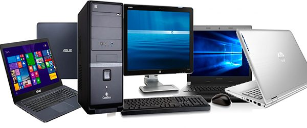
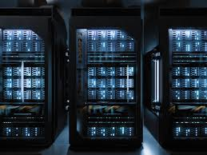

Computadores pessoais modernos
Alta performance e baixo consumo de energia.

A era da internet e da inteligência artificial.
A quinta geração é marcada por avanços em inteligência artificial, computação em nuvem, dispositivos móveis e alta conectividade. Os computadores tornaram-se extremamente rápidos, compactos e poderosos.
A internet se consolidou, permitindo o surgimento de tecnologias web como HTML, CSS e JavaScript, essenciais para a construção de sites e aplicações.
Os principais dispositivos desse período incluem:
Alta performance e baixo consumo de energia.
Computadores de bolso com grande poder de processamento.

Base da internet moderna.
Essa geração transformou a sociedade, conectando pessoas e informações em escala global. A computação tornou-se essencial no dia a dia.
Os computadores da quinta geração são rápidos, conectados e inteligentes. Eles sustentam a internet, a web moderna e as tecnologias de inteligência artificial.